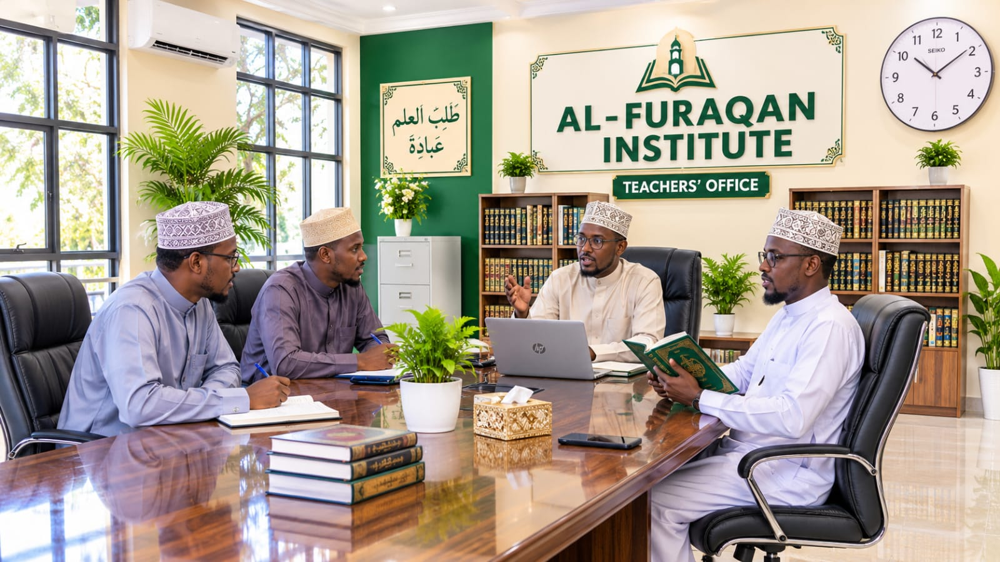

معهد الفرقان مؤسسة تعليمية تهدف إلى تقديم تعليم إسلامي وأكاديمي متميز. نسعى إلى إعداد جيل متعلم ومنضبط ومسؤول، قادر على خدمة المجتمع.
تقديم تعليم عالي الجودة، وتعزيز القيم الإسلامية، وتنمية الأخلاق الحسنة، وإعداد الطلاب لمستقبل أفضل.
أن نكون مركزاً تعليمياً متميزاً يخرج أجيالاً متعلمة وواثقة وملتزمة بالأخلاق الإسلامية.
نؤمن بأن التعليم أساس بناء المجتمع الناجح. ونسعى إلى توفير بيئة تعليمية إيجابية للطلاب والطالبات.